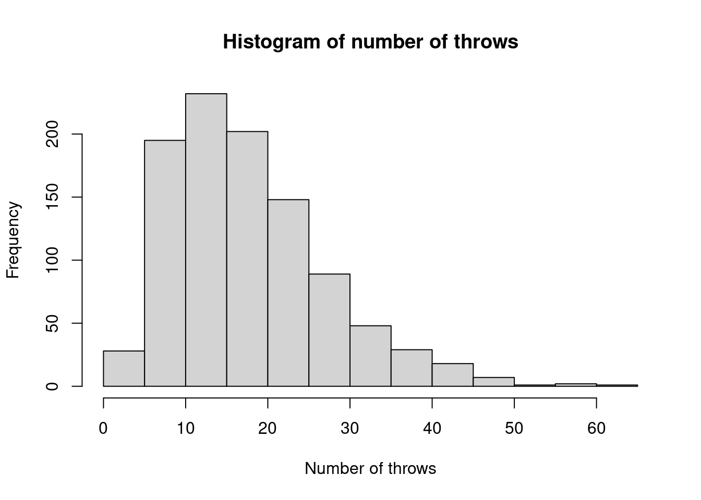
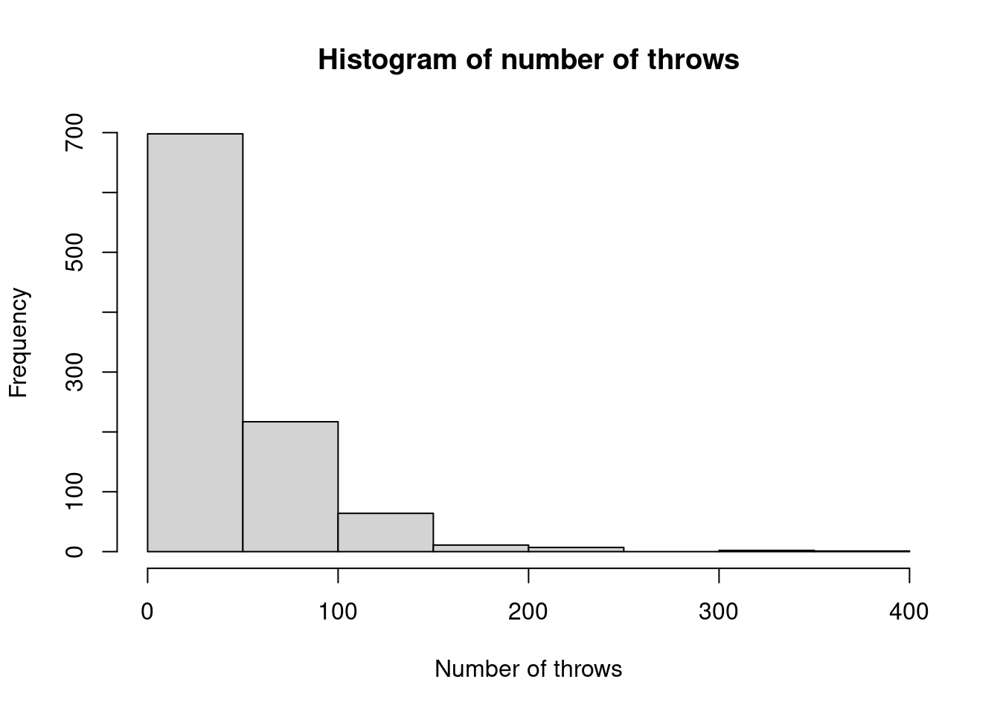

2 Chapter 2 exercises
Compute \(\pi + \text{e}\), where \(\pi = 3.1415927 \times 10^0\) and \(\text{e} = 2.7182818 \times 10^0\), using floating point addition in base 10, working to five decimal places.
Solution
As \(\pi\) and \(\text{e}\) have a common exponent, we sum their mantissas, i.e. \[\begin{align*} \pi + \text{e} &= (3.14159 \times 10^0) + (2.71828 \times 10^0)\\ &= 5.85987 \times 10^0 \end{align*}\]
Now compute \(10^6\pi + \text{e}\), using floating point addition in base 10, now working to seven decimal places.
Solution
We first need to put the numbers on a common exponent, which is that of \(10^6 \pi\). \[\begin{align*} 10^6 \pi &= 3.1415927 \times 10^6\\ \text{e} & = 2.7182818 \times 10^0 = 0.0000027 \times 10^6. \end{align*}\] Then summing their mantissas gives \[\begin{align*} 10^6 \pi + \text{e} &= (3.1415927 \times 10^6) + (2.7182818 \times 10^0)\\ &= (3.1415927 \times 10^6) + (0.0000027 \times 10^6)\\ &= (3.1415927 + 0.0000027) \times 10^6\\ &= 3.1415954 \times 10^6. \end{align*}\]
What would happen if we computed \(10^6\pi + \text{e}\) using a base 10 floating point representation, but only worked with five decimal places?
Solution
If we put \(2.7182818 \times 10^0\) onto the exponent \(10^6\) we get \(0.00000 \times 10^6\) to five decimal places, and so \(\text{e}\) becomes negligible alongside \(10^6 \pi\) if we only work to five decimal places.
Write \(2\pi\) in binary form using single- and double precision arithmetic. [Hint: I recommend you consider the binary forms for \(\pi\) given in the lecture notes, and you might also use
bit2decimal()from the lecture notes to check your answer.]
Solution
The key here is to note that we want to calculate \(\pi \times 2\). As we have a number in the form \(S \times (1 + F) \times 2^{E - e}\), then we just need to raise \(E\) by one. For both single- and double-precision, this corresponds to changing the last zero in the 0s and 1s for the \(E\) term to a one.
> bit2decimal <- function(x, e, dp = 20) { + # function to convert bits to decimal form + # x: the bits as a character string, with appropriate spaces + # e: the excess + # dp: the decimal places to report the answer to + bl <- strsplit(x, ' ')[[1]] # split x into S, E and F components by spaces + # and then into a list of three character vectors, each element one bit + bl <- lapply(bl, function(z) as.integer(strsplit(z, '')[[1]])) + names(bl) <- c('S', 'E', 'F') # give names, to simplify next few lines + S <- (-1)^bl$S # calculate sign, S + E <- sum(bl$E * 2^c((length(bl$E) - 1):0)) # ditto for exponent, E + F <- sum(bl$F * 2^(-c(1:length(bl$F)))) # and ditto to fraction, F + z <- S * 2^(E - e) * (1 + F) # calculate z + out <- format(z, nsmall = dp) # use format() for specific dp + # add (S, E, F) as attributes, for reference + attr(out, '(S,E,F)') <- c(S = S, E = E, F = F) + out + } > bit2decimal('0 10000001 10010010000111111011011', 127)## [1] "6.28318548202514648438" ## attr(,"(S,E,F)") ## S E F ## 1.0000000 129.0000000 0.5707964> bit2decimal('0 10000000001 1001001000011111101101010100010001000010110100011000', 1023)## [1] "6.28318530717958623200" ## attr(,"(S,E,F)") ## S E F ## 1.0000000 1025.0000000 0.5707963Find the calculation error in
Rof \(b - a\) where \(a = 10^{16}\) and \(b = 10^{16} + \exp(0.5)\).
Solution
> a <- 1e16 > b <- 1e16 + exp(.5) > b - a## [1] 2Create the following: The row vector \[ \mathbf{a} = (2, 4, 6), \] the \(2 \times 3\) matrix \[ \mathbf{B} = \left(\begin{array}{ccc} 6 & 5 & 4\\ 3 & 2 & 1\end{array}\right) \] and a list with first element \(\mathbf{a}\) and second element \(\mathbf{B}\), and an arbitrary (i.e. with whatever values you like) \(5 \times 3 \times 2\) array with a
'name'attribute that is'array1'. \(~\)
For each of the above, consider whether your code could be simpler.
Solution
> a <- t(c(2, 4, 6)) > B <- matrix(6:1, 2, byrow = TRUE) > l <- list(a, B) > arr <- array(rnorm(30), c(5, 3, 2)) > attr(arr, 'name') <- 'array1' > arr## , , 1 ## ## [,1] [,2] [,3] ## [1,] -0.1665812 0.05562442 0.6567512 ## [2,] -0.3405456 -0.55061824 -1.2692691 ## [3,] 0.2649471 -0.28015988 1.2724331 ## [4,] -0.9606964 0.32101714 0.8776822 ## [5,] -0.4040439 0.51386765 -0.6041180 ## ## , , 2 ## ## [,1] [,2] [,3] ## [1,] -1.4899078 -1.6131559 0.07536778 ## [2,] 0.1407264 0.5466237 0.22770119 ## [3,] 0.5799854 -1.1506912 0.60413031 ## [4,] -1.1158511 -1.7293453 0.59833274 ## [5,] -0.6673627 -0.5074252 0.59765211 ## ## attr(,"name") ## [1] "array1"Produce a \(3 \times 4 \times 4 \times 2\)
arraycontaining Uniform(0, 1) random variates and compute the mean over its second and third margins usingapply(..., ..., means)androwMeans()orcolMeans().
Solution
> arr <- array(NA, c(3, 4, 4, 2)) > arr[] <- runif(prod(dim(arr))) # saves names to get the number right > apply(arr, 2:3, mean)## [,1] [,2] [,3] [,4] ## [1,] 0.6598318 0.3636343 0.5869241 0.4264603 ## [2,] 0.4855723 0.5240322 0.4078280 0.5484461 ## [3,] 0.2890008 0.5000593 0.3627857 0.4479420 ## [4,] 0.4775275 0.3867275 0.4655408 0.3439320> rowMeans(aperm(arr, c(2, 3, 1, 4)), dims = 2)## [,1] [,2] [,3] [,4] ## [1,] 0.6598318 0.3636343 0.5869241 0.4264603 ## [2,] 0.4855723 0.5240322 0.4078280 0.5484461 ## [3,] 0.2890008 0.5000593 0.3627857 0.4479420 ## [4,] 0.4775275 0.3867275 0.4655408 0.3439320> colMeans(aperm(arr, c(1, 4, 2, 3)), dims = 2)## [,1] [,2] [,3] [,4] ## [1,] 0.6598318 0.3636343 0.5869241 0.4264603 ## [2,] 0.4855723 0.5240322 0.4078280 0.5484461 ## [3,] 0.2890008 0.5000593 0.3627857 0.4479420 ## [4,] 0.4775275 0.3867275 0.4655408 0.3439320Create a 3-element
listof vectors comprising Uniform(0, 1) variates of length 3, 5 and 7, respectively.
Solution
> lst <- list(runif(3), runif(5), runif(7))Create another list in which the vectors above are sorted into descending order.
Solution
> lst2 <- lapply(lst, sort, decreasing = TRUE)Then create a vector comprising the minimum of each vector in the list, and another stating which element is the minimum. [Hint: for the latter you may want to consult the ‘See Also’ part of the
min()function’s help file.]
Solution
> sapply(lst, min)## [1] 0.22358422 0.40101038 0.05418506> sapply(lst, which.min)## [1] 3 5 5
Use a
for()loop to produce the following. [Hint: the functionpaste()might be useful.]## [1] "iteration 1" ## [1] "iteration 2" ## [1] "iteration 3" ## [1] "iteration 4" ## [1] "iteration 5" ## [1] "iteration 6" ## [1] "iteration 7" ## [1] "iteration 8" ## [1] "iteration 9" ## [1] "iteration 10"
Solution
> for (i in 1:10) print(paste('iteration', i))## [1] "iteration 1" ## [1] "iteration 2" ## [1] "iteration 3" ## [1] "iteration 4" ## [1] "iteration 5" ## [1] "iteration 6" ## [1] "iteration 7" ## [1] "iteration 8" ## [1] "iteration 9" ## [1] "iteration 10"Consider the following two infinite series that represent \(\pi\).\[\begin{align*} \pi &= 4 \left[1 - \frac{1}{3} + \frac{1}{5} - \frac{1}{7} + \frac{1}{9} - \frac{1}{11} + \frac{1}{13} -\cdots\right]\\ \pi &= 3 + \frac{4}{2 \times 3 \times 4} - \frac{4}{4 \times 5 \times 6} + \frac{4}{6 \times 7 \times 8} - \frac{4}{8 \times 9 \times 10} + \cdots \end{align*}\] Use a
while()loop to find which converges topiinRto within \(\epsilon_m^{1/3}\) using the fewest terms, where \(\epsilon_m\) isR’s machine tolerance.
Solution
Here’s the first approximation…
> quarter_pi <- 1 > terms1 <- 1 > denom <- 3 > multiplier <- -1 > my_pi <- 4 * quarter_pi > while(abs(my_pi - pi) > .Machine$double.eps^(1/3)) { + terms1 <- terms1 + 1 + quarter_pi <- quarter_pi + multiplier / denom + my_pi <- 4 * quarter_pi + denom <- denom + 2 + multiplier <- -1 * multiplier + } > terms1## [1] 165141…and here’s the second approximation…
> my_pi <- 3 > terms2 <- 2 > denoms <- c(2, 3, 4) > multiplier <- 1 > while(abs(my_pi - pi) > .Machine$double.eps^(1/3)) { + my_pi <- my_pi + multiplier * 4 / prod(denoms) + denoms <- denoms + 2 + multiplier <- -1 * multiplier + terms2 <- terms2 + 1 + } > terms2## [1] 36Write a function based on a
for()loop to calculate the cumulative sum of a vector, \(\bf y\), i.e. so that its \(i\)th value, \(y_i\) say, is \[y_i = \sum_{j = 1}^i x_j.\]
Solution
Either of the following two functions are options (although others exist).
> my_cumsum <- function(x) { + # function 1 to calculate cumulative sum of a vector + # x is a vector + # returns a vector of length length(x) + out <- numeric(length(x)) + for (i in 1:length(x)) { + out[i] <- sum(x[1:i]) + } + out + } > > my_cumsum2 <- function(x) { + # function 2 to calculate cumulative sum of a vector + # x is a vector + # returns a vector of length length(x) + out <- x + for (i in 2:length(x)) { + out[i] <- out[i] + out[i - 1] + } + out + }We see that both perform the same calculation.
> x <- runif(10) > cumsum(x)## [1] 0.8291765 1.6531608 1.7352366 1.8885832 2.3897789 3.0083146 3.4798496 3.5285217 ## [9] 4.3646237 5.1984644> my_cumsum(x)## [1] 0.8291765 1.6531608 1.7352366 1.8885832 2.3897789 3.0083146 3.4798496 3.5285217 ## [9] 4.3646237 5.1984644> my_cumsum2(x)## [1] 0.8291765 1.6531608 1.7352366 1.8885832 2.3897789 3.0083146 3.4798496 3.5285217 ## [9] 4.3646237 5.1984644Then benchmark its execution time against
R’s vectorised functioncumsum()for summing 1000 iid \(Uniform[0, 1]\) random variables.
Solution
> x <- runif(1e3) > microbenchmark::microbenchmark( + cumsum(x), + my_cumsum(x), + my_cumsum2(x) + )## Unit: nanoseconds
To start a board game, a player must throw three sixes using a conventional die. Write a function to simulate this, which returns the total number of throws that the player has taken.
Solution
> sixes1 <- function() { + # function to simulate number of throws needed + # to reach three sixes + # n is an integer + # returns total number of throws taken + out <- sample(1:6, 3, replace = TRUE) + while(sum(out == 6) < 3) { + out <- c(out, sample(1:6, 1)) + } + return(length(out)) + }Then use 1000 simulations to empirically estimate the distribution of the number of throws needed.
Solution
> samp1 <- replicate(1e3, sixes1()) > table(samp1)## samp1 ## 3 4 5 6 7 8 9 10 11 12 13 14 15 16 17 18 19 20 21 22 23 24 25 26 27 28 29 30 31 32 33 ## 2 9 17 32 33 36 37 57 44 47 42 46 53 41 47 37 47 30 43 34 21 29 21 26 20 11 13 19 13 12 6 ## 34 35 36 37 38 39 40 41 42 43 44 45 47 49 50 52 56 58 61 ## 10 7 8 6 6 6 3 7 5 1 2 3 2 4 1 1 1 1 1> hist(samp1, xlab = 'Number of throws', main = 'Histogram of number of throws')Figure 2.1: Histogram of empirical distribution of number of throws for starting method 1.
I think you’ll agree that this would be a rather dull board game! It is therefore proposed that a player should instead throw two consecutive sixes. Write a function to simulate this new criterion, and estimate its distribution empirically.
Solution
> sixes2 <- function() { + # function to simulate number of throws needed + # for two consecutive sixes + # n is an integer + # returns total number of throws taken + out <- sample(1:6, 2, replace = TRUE) + cond <- TRUE + while(cond) { + if (sum(out[1:(length(out) - 1)] + out[2:length(out)] == 12) > 0) { + cond <- FALSE + } else { + out <- c(out, sample(1:6, 1)) + } + } + return(length(out)) + } > sixes2()## [1] 2Then use 1000 simulations to empirically estimate the distribution of the number of throws needed.
Solution
> samp2 <- replicate(1e3, sixes2()) > table(samp2)## samp2 ## 2 3 4 5 6 7 8 9 10 11 12 13 14 15 16 17 18 19 20 21 22 23 24 ## 30 17 26 21 18 20 42 17 20 25 20 14 16 12 16 15 12 16 8 20 14 10 14 ## 25 26 27 28 29 30 31 32 33 34 35 36 37 38 39 40 41 42 43 44 45 46 47 ## 8 10 17 14 12 11 12 16 10 16 9 14 10 8 12 6 7 6 14 11 11 9 7 ## 48 49 50 51 52 53 54 55 56 57 58 59 60 61 62 63 64 65 66 67 68 69 70 ## 5 11 9 3 8 7 5 9 6 2 7 4 5 4 9 7 5 9 3 8 3 3 4 ## 71 72 73 74 75 76 78 79 80 81 82 83 84 85 86 87 88 89 90 91 92 93 94 ## 6 8 6 5 2 8 4 5 1 7 2 5 4 2 2 8 1 4 6 1 4 1 1 ## 96 97 98 99 100 101 103 104 105 106 107 108 109 110 111 112 113 115 117 118 119 120 121 ## 1 5 3 3 1 1 4 2 2 1 2 3 4 5 1 3 1 4 1 1 1 2 1 ## 122 124 125 129 131 133 134 135 139 142 143 144 146 152 153 160 165 168 172 175 179 180 189 ## 3 2 1 2 1 1 3 1 3 2 1 2 3 1 1 1 1 1 1 1 1 1 1 ## 191 201 202 204 208 213 235 239 327 372 ## 1 1 1 1 1 1 1 1 2 1> hist(samp2, xlab = 'Number of throws', main = 'Histogram of number of throws')Figure 2.2: Histogram of empirical distribution of number of throws for starting method 2.
By comparing sample mean starting numbers of throws, which starting criterion should get a player into the game quickest?
Solution
> mean(samp1) - mean(samp2)## [1] -24.2So the second approach, by comparing means, takes more throws before the game can begin.
Consider the following two functions for calculating \[d_i = x_{i + 1} - x_i, \hspace{2cm} i = 1, \ldots, n - 1\] where \({\bf x}' = (x_1, \ldots, x_n)\).
> diff1 <- function(x) { + # function to calculate differences of a vector + # based on a for loop + # x is a vector + # returns a vector of length (length(x) - 1) + out <- numeric(length(x) - 1) + for (i in 1:(length(x) - 1)) { + out[i] <- x[i + 1] - x[i] + } + out + }> diff2 <- function(x) { + # function to calculate differences of a vector + # based on vectorisation + # x is a vector + # returns a vector of length (length(x) - 1) + id <- 1:(length(x) - 1) + x[id + 1] - x[id] + }The first,
diff1()uses a straightforwardfor()loop to calculate \(d_i\), for \(i = 1, \ldots, n - 1\), whereasdiff2()could be seen to be a vectorised alternative. Benchmark the two for a vector of \(n = 1000\) iid \(N(0, 1)\) random variates by comparing the median difference in execution time.
Solution
> x <- rnorm(1000) > microbenchmark::microbenchmark( + diff1(x), + diff2(x) + )## Unit: microsecondsThe following function assesses whether all elements is a logical vector are
TRUE.> all2 <- function(x) { + # function to calculate whether all elements are TRUE + # returns a scalar + # x is a logical vector + sum(x) == length(x) + }Calculate the following and benchmark
all2()againstR’s built-in functionall(), which does the same.> n <- 1e4 > x1 <- !logical(n)
Solution
> all2(x1)## [1] TRUE> all(x1)## [1] TRUE> microbenchmark::microbenchmark( + all2(x1), + all(x1) + )## Unit: microsecondsWe see that both take a similar amount of time.
Now swap the first element of
x1so that it’sFALSEand repeat the benchmarking.
Solution
> x1[1] <- FALSE > all2(x1)## [1] FALSE> all(x1)## [1] FALSE> microbenchmark::microbenchmark( + all2(x1), + all(x1) + )## Unit: nanosecondsNow
all2()is much slower. This is because it’s performed a calculation on the entirex1vector, whereasall()has stopped as soon as it’s found aFALSE.Evaluate the function
any2()below againstR’s built-in functionany()similarly.> any2 <- function(x) { + # function to calculate whether any elements are TRUE + # returns a scalar + # x is a logical vector + sum(x) > 0 + }
Solution
> x2 <- logical(n) > any2(x2)## [1] FALSE> any(x2)## [1] FALSE> microbenchmark::microbenchmark( + any2(x2), + any(x2) + )## Unit: microsecondsWe again see that both take a similar amount of time.
Now swap the first element of
x2so that it’sFALSEand repeat the benchmarking.
Solution
> x2[1] <- TRUE > microbenchmark::microbenchmark( + any2(x2), + any(x2) + )## Unit: nanosecondsThis time
any2()is much slower, for similar reasoning toall2()being much slower thanall(), except thatany()is stopped when it reaches aTRUE.